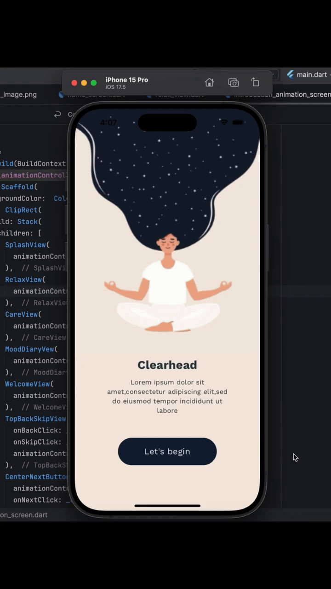

What we do?
At Internify, we believe that internships are the first step toward building a successful career. Our platform connects passionate students with leading companies, offering hands-on experience in real-world projects. We aim to bridge the gap between classroom learning and practical industry exposure.
Whether you’re a student looking for an opportunity to apply your skills, or a company seeking fresh and creative talent — Internify serves as the perfect meeting point. Our curated internship listings cover multiple domains including Web Development, Data Science, Digital Marketing, Graphic Design, and many more.
Every internship listed on Internify is carefully verified to ensure authenticity and relevance. We work closely with our partner companies to provide students with not just internships, but true learning experiences that shape their professional growth.
Start your journey today — explore, apply, and step into the world of opportunities with Internify.
Internship categories
Web Dev

Build modern and responsive websites using HTML, CSS, JavaScript, and frameworks like React. Start your journey as a full-stack web developer.
Cybersecurity

Protect systems and data from cyber threats through ethical hacking and digital forensics. Secure the digital future with your skills.
Cloud Computing

Explore scalable infrastructure and deployment using AWS, Azure, and Google Cloud. Shape the backbone of tomorrow’s tech systems.
Data Science

Analyze data, visualize insights, and build machine learning models to make smarter decisions. Turn raw data into real-world intelligence.
App Dev
Create Android and iOS applications using Flutter or React Native. Build mobile apps that connect people and simplify lives.
UI/UX Design

Learn user interface and experience design to craft visually appealing and user-friendly products. Design experiences that people love to use.
Find Your Dream Internship
Software Engineering
Google offers a highly reputed Software Engineering Internship program designed for students passionate about technology and innovation. This internship provides hands-on experience in developing scalable and efficient solutions used by millions of people worldwide. Interns at Google work on real-world projects in domains like Artificial Intelligence, Cloud Computing, and Product Development, gaining exposure to advanced technologies and modern software practices. Throughout the internship, students collaborate with expert mentors and global teams, learning the best approaches to design, code, test, and deploy software. The program emphasizes creativity, problem-solving, and teamwork, helping interns grow both technically and professionally. By the end of the internship, participants gain a deeper understanding of software engineering principles and Google’s work culture — preparing them for impactful careers in the tech industry.
Data Science
The Microsoft Data Science Internship is an excellent opportunity for students who want to explore the world of data-driven decision-making and artificial intelligence. This internship allows learners to work on real datasets, analyze business challenges, and create predictive models that power Microsoft’s global products and services. Interns collaborate with experienced data scientists and engineers, learning how to use tools like Python, Power BI, and Azure Machine Learning to extract insights and build intelligent solutions. The program emphasizes statistical thinking, analytical reasoning, and problem-solving, helping students understand how data shapes innovation at Microsoft. Throughout the internship, participants receive guidance from mentors, attend technical sessions, and gain exposure to real corporate projects. By the end of the internship, interns develop a strong foundation in data analytics, machine learning, and visualization — preparing them for successful careers in data science and AI-related fields.
TCS
Tata Consultancy Services (TCS) offers a practical and skill-oriented Web Development Internship designed for students who are passionate about building dynamic and responsive websites. This internship provides an opportunity to work on real client-based projects using modern technologies like HTML, CSS, JavaScript, React, and Node.js. Interns at TCS learn the complete process of web application development — from front-end design to back-end integration — while working alongside professional developers and mentors. The program focuses on clean coding practices, teamwork, and real-world problem-solving, helping students gain valuable hands-on experience in software development. By the end of the internship, participants understand how large-scale enterprise web systems are structured, tested, and deployed. It serves as an excellent platform for learners to strengthen their programming concepts and prepare for future roles in full-stack or software development careers.
Cybersecurity
Infosys offers a specialized Cybersecurity Internship program for students who aim to build a strong foundation in information security and ethical hacking. The internship provides real-world exposure to the methods used in protecting digital systems, networks, and sensitive data from modern cyber threats. Interns at Infosys work with experienced cybersecurity professionals, gaining hands-on experience in vulnerability assessment, penetration testing, network defense, and risk management. Throughout the program, participants learn to use essential tools like Wireshark, Nmap, Metasploit, and Burp Suite, while understanding how to identify and fix security loopholes in systems. The internship emphasizes critical thinking, analytical reasoning, and responsible handling of security practices, ensuring students develop both technical expertise and professional discipline. By the end of the internship, participants gain a solid understanding of cybersecurity principles and the confidence to contribute effectively in roles related to ethical hacking, digital forensics, or information security management.
UI/UX Design
Wipro offers an engaging UI/UX Design Internship program focused on helping students understand the process of creating meaningful digital experiences. This internship provides hands-on learning in user research, interface design, and usability testing, allowing participants to combine creativity with problem-solving. Interns at Wipro collaborate with design professionals to develop wireframes, prototypes, and interactive interfaces using tools like Figma, Adobe XD, and Sketch. They also learn how to analyze user behavior and design solutions that are both visually appealing and easy to navigate. The program emphasizes design thinking, teamwork, and attention to detail, helping students understand the importance of aesthetics, accessibility, and functionality in digital products. By the end of the internship, participants gain a strong foundation in UI/UX principles and are equipped with the practical skills required to design intuitive interfaces for websites and mobile applications in a professional environment.
Cloud Computing
Amazon Web Services (AWS) offers a dynamic Cloud Computing Internship designed for students who want to gain real-world experience in managing and deploying scalable cloud infrastructure. This internship provides a practical understanding of how cloud technology powers global businesses and applications across the world. Interns at Amazon work with the AWS engineering teams, learning to design and implement secure, efficient, and high-performing cloud solutions. The program covers key domains such as Virtualization, DevOps, Networking, and Serverless Architecture, giving participants a comprehensive understanding of cloud ecosystems. Throughout the internship, students gain hands-on experience with tools like AWS EC2, S3, Lambda, and CloudFormation, while working on projects that simulate real enterprise environments. The internship emphasizes automation, scalability, and innovation, preparing participants to build reliable cloud systems. By the end of the program, interns develop practical knowledge in cloud infrastructure management — an essential skill for today’s technology-driven world.